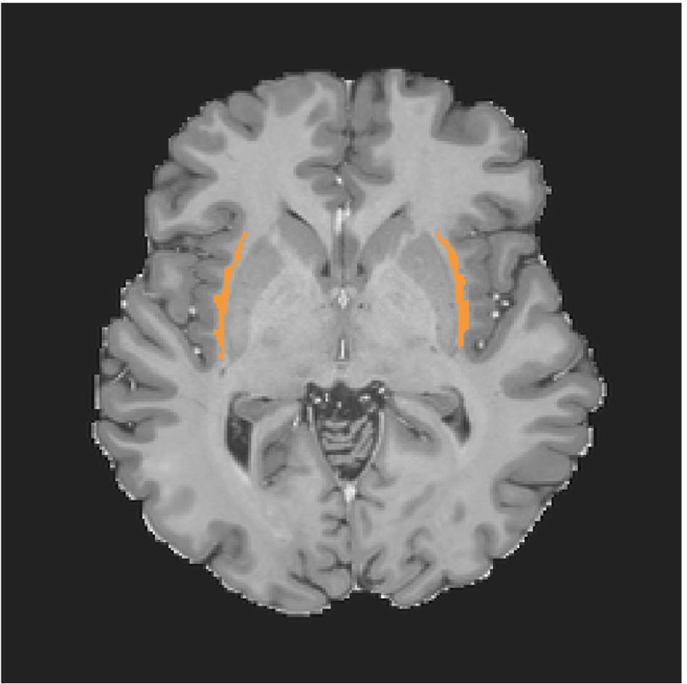

<section class="resume-section" id="projects">
    <div class="resume-section-content">
        <h2 class="subheading mb-5">Projects</h2>
        
        <!-- Project 1 -->
        <div class="row mb-5">
            <div class="col-lg-3">
                
            </div>
            <div class="col-lg-9">
                <h3 class="project-title">Framingham Heart Study: FreeSurfer Analysis</h3>
                <p class="lead">
                    The proposed project involves performing volumetric analysis on high-quality MRI neurological imaging data from 1500 individuals enrolled in the Framingham Heart Study, in collaboration with Boston University. The project includes:
                </p>
                <ul>
                    <li>Assessing the quality of all 3,000 MRI scans to ensure they meet the necessary standards.</li>
                    <li>Using longitudinal analysis algorithms to generate regional volume estimates from two or more scans per subject taken years apart.</li>
                </ul>
            </div>
        </div>

        <hr>

        <!-- Project 2 -->
        <div class="row mb-5">
            <div class="col-lg-3">
                
            </div>
            <div class="col-lg-9">
                <h3 class="project-title">Segmentations</h3>
                <p class="lead">This project includes various segmentation tasks, focusing on different neurological structures.</p>
                <h4 class="project-subtitle">Claustrum Segmentation</h4>
                <p class="lead">
                    This project involved labeling the claustrum and collaborating with postdoc Chiara Mauri to develop automated methods using the SynthSeg neural network for both ex vivo and in vivo settings.
                </p>
                <ul>
                    <li>Located between the putamen and insular cortex, the claustrum is a thin, band-like gray matter structure completely enveloped by white matter.</li>
                    <li>Its natural ridges and finger-like projections make it challenging to label accurately.</li>
                </ul>
                <p>
                    For more details, you can refer to a similar approach in this paper: <a href="path/to/kang.2020.claustrum-man-label-protocol.pdf" target="_blank">Kang et al., 2020, Claustrum Manual Label Protocol</a>.
                </p>
            </div>
        </div>

        <hr>
        <!-- Add more projects as needed -->
    </div>
</section>
